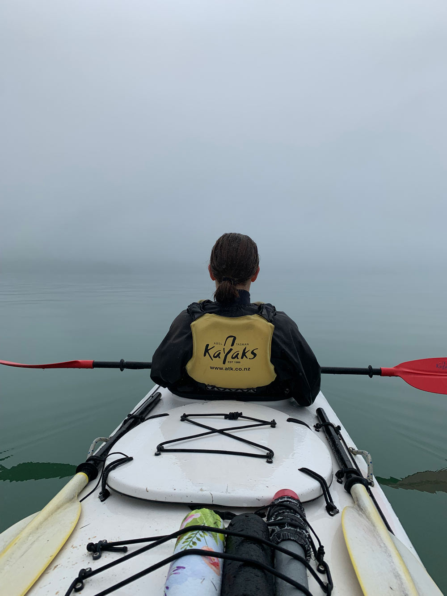
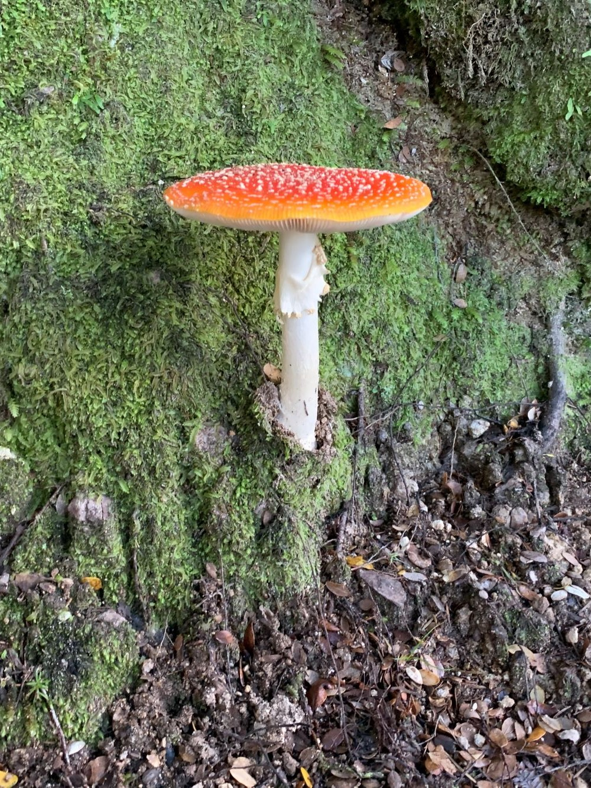
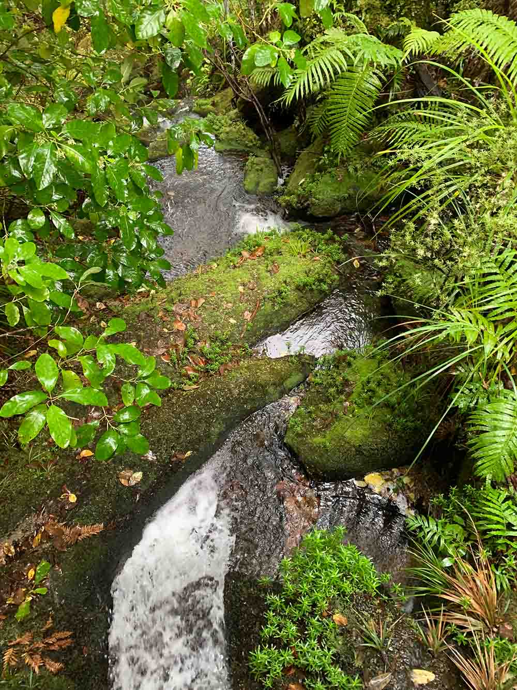
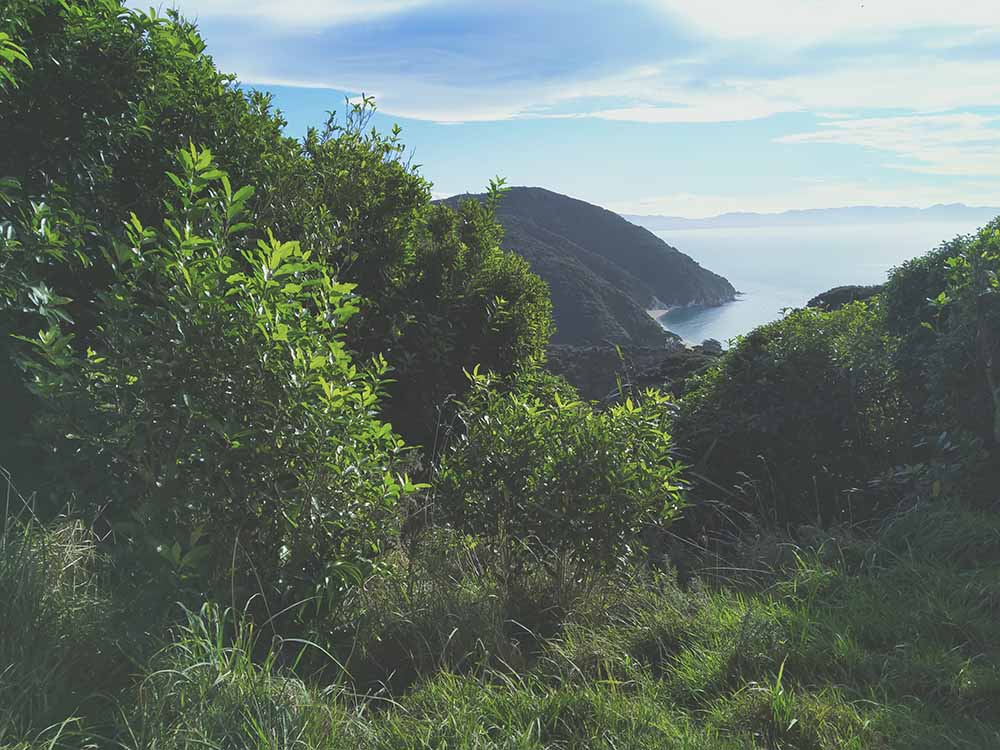
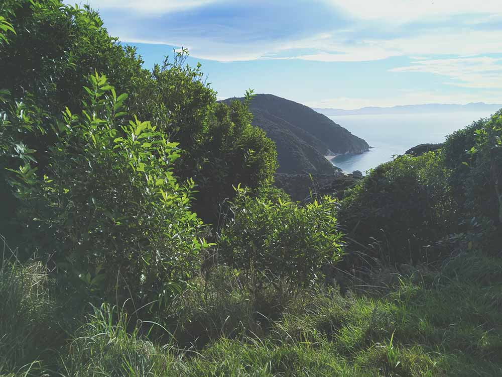
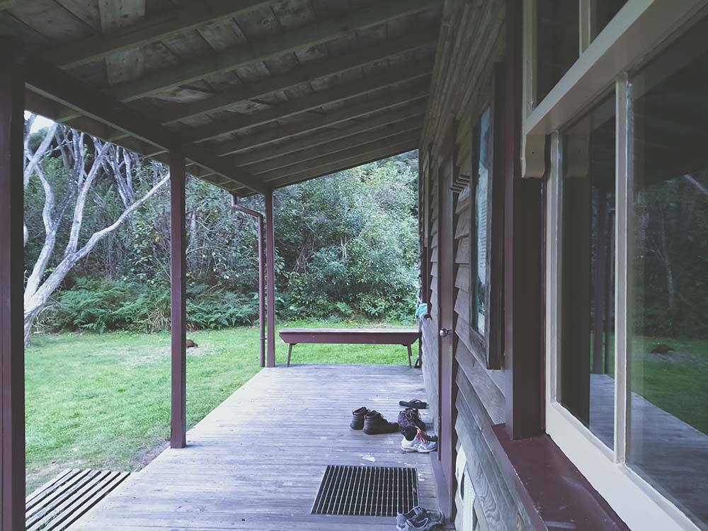

For the first day of the trip we chose to kayak. We packed our gear into the front and back of the kayaks and set off, it was quite a misty day with occasional showers resulting in not the best visibility. On our way we took a detour to Adele Island where we were greeted with amazing bird life that could be heard from all around. Once we reached the hut we cooked on the fire and settled in for an early night.
We woke up early to cross the mud flats during low tide, if you are planning on walking the Able Tasman you should check the tide timetables beforehand to make sure that the crossings are safe and passable. The rest of the day was an undulating walk through bush connecting various beaches. We reached the hut just in time to avoid the heavy rain that started at about mid day. Again we all huddled around the fire to keep nice and warm and dry out our clothes.
 
We had a lovely sunny day. In contrast to our last few days of tramping we could now see more clearly the beautiful landscape we were in. We took a detour to a beach to pick up some gear that had been dropped off for the rest of the trip, This resulted in us having to scramble up a hill on a smaller path to get back on the main track. We had dehydrated meals for dinner as we watched the tide fill the inlet.


We woke up early to cross the inlet. I would highly recommend bringing water shoes as I don’t think that Grace's duct tape jandals are going to take off. We walked past many beaches throughout the day and stopped for lunch and a swim, it was great but our bags were attacked by Weka. We walked past the bay where we were catching the ferry out on day 5 and walked around Separation point to Whaiwharangi hut. I thought I saw something swimming in the water at the beach near the hut so I rushed in to swim with it, I can’t quite swim as fast as a seal so I was left in soaking clothes.
 

On the last day we chose to go over Gibbs hill so we were heading back a different way, as this was not part of the great walk the track was not as well maintained and there was a lot of hill scrambling. We reached the beach for the ferry pick up by midday so we ate lunch and I made a sand-dragon. On the ferry ride back we saw lots of seals in a small cove.
